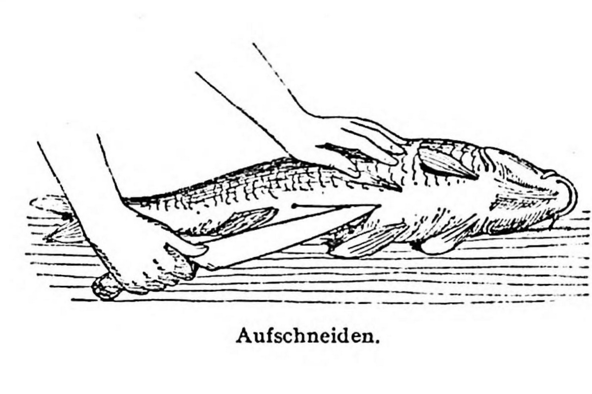

Böhmischer Karpfen

Beschreibung
Carpe à la bohémienne. (1½ Stunden, 1 Port. = 252 [87] Kal. = 378 Nem.)
Zutaten
- Karpfen 2 kg
- Salzwasser
- Soß:
- Wasser 1l
- Essig ⅛ bis ¼ l
- Salz
- Petersilienwurzel ¼ (6 dkg)
- Selleriewurzel (Zeller) ¼ (3 dkg)
- Gelbe Rübe ¼ (4 dkg)
- Pfefferkörner 6
- Sirup 3 Eßlöffel (7dkg)
- Lebkuchen, unglasiert, 6 dkg
- Mandeln 5 dkg
- Türkische Pflaumen 10
- Nußkerne 4 dkg
- Rosinen 3 dkg
- Gewürznelken 2
- Lorbeerblätter 2
Zubereitung
- Der Karpfen wird entschuppt, ausgenommen, gewaschen, in entsprechende Stücke geteilt und ohne Kopf 20 Minuten lang in Salzwasser gekocht.
- Der Kopf wird in einem Gemenge aus Wasser, Essig, Salz, Wurzelwerk und Pfefferkörnern ½ Stunde lang gekocht.
- Nach Hinzufügung von Sirup, geriebenem dunklem Lebkuchen läßt man die Soß noch eine weitere Viertelstunde kochen, passiert sie, vermengt sie mit geschwellten, länglich geschnittenen Mandeln, ebensolchen türkischen Pflaumen, geviertelten Nüssen und Rosinen.
- Mit dieser Soß wird der gekochte Fisch übergossen.
Ein Teil des Essigs kann durch Rotwein ersetzt werden.
Beigabe: Knödel
Aus: Olga Hess u. Adolf Hess: Wiener Küche (Wien: Deuticke, 1950)